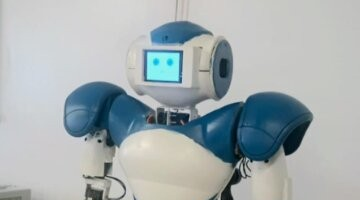
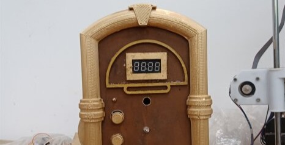
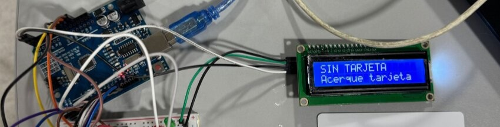
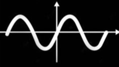

Proyecto integrador
Proyecto Integrador II: Robot humanoide Turi
Proyecto de integración mecatrónica orientado al desarrollo, puesta en marcha y validación de un robot humanoide.

1.1
Portafolio de Competencias — Lucas Elizalde
Esta competencia se relaciona con la implementación, operación, monitoreo y puesta en servicio de sistemas mecatrónicos.
Implementar software y hardware específico para el correcto desempeño de procesos.
Verificar la capacidad operacional de sistemas mecatrónicos mediante monitoreo.
Instalar y poner en servicio sistemas mecatrónicos considerando calidad, seguridad y medio ambiente.
Proyecto de integración mecatrónica orientado al desarrollo, puesta en marcha y validación de un robot humanoide.

Prototipo automatizado para dosificación de aroma, integrando lógica de control, montaje físico y validación.

Laboratorio con ATmega328P orientado a control, monitoreo, sensado y validación física.

Evidencia vinculada a tablero industrial, motor trifásico, contactores, relés y secuencias.

Estas evidencias muestran que operar un sistema mecatrónico implica más que hacerlo funcionar una vez: requiere ponerlo en marcha, observar su respuesta, ajustar errores y verificar que el comportamiento sea consistente.
Portafolio de Competencias — Lucas Elizalde
Esta competencia se enfoca en inspección, intervención, montaje, desmontaje, verificación y aplicación de procedimientos técnicos.
Ejecutar planes de mantenimiento preventivos y correctivos diseñados por especialistas.
Aplicar procedimientos e instrucciones relacionadas con mantenimiento basado en confiabilidad.
Evidencia centrada en montaje y desmontaje del eje de transferencia y caja de cambios.

Evidencia vinculada a tablero industrial, motor trifásico, contactores, relés y secuencias.
Evidencia de diseño, montaje y verificación de circuitos neumáticos y electroneumáticos.

El trabajo en esta competencia me permitió entender mejor la importancia del procedimiento, la revisión previa y la verificación final al intervenir sistemas físicos, eléctricos y neumáticos.
Portafolio de Competencias — Lucas Elizalde
Esta competencia reúne evidencias donde se diseñaron, fabricaron, integraron o documentaron sistemas mecatrónicos.
Fabricar equipos, sistemas y procesos mecatrónicos de acuerdo con diseño.
Incorporar tecnologías ya evaluadas a sistemas y procesos mecatrónicos.
Generar insumos de procesos existentes para el diseño o rediseño de un sistema.
Proyecto de integración mecatrónica orientado al desarrollo, puesta en marcha y validación de un robot humanoide.
Prototipo automatizado para dosificación de aroma, integrando lógica de control, montaje físico y validación.
Laboratorio de integración embebida con SPI, I2C, UART, MPU6050 y robot de mini fútbol.

Laboratorio de automatismos digitales sin microcontroladores, usando lógica combinacional y secuencial.

Las evidencias seleccionadas muestran distintas formas de pasar de una idea o consigna técnica a un sistema funcional, integrando diseño, programación, montaje y validación.
Portafolio de Competencias — Lucas Elizalde
Esta competencia se vincula con prototipado, integración tecnológica, pruebas y ensayos.
Reconocer paradigmas tecnológicos tradicionales e innovadores.
Fabricar prototipos para sistemas y procesos mecatrónicos.
Colaborar en la integración de nuevas tecnologías realizando pruebas y ensayos.
Proyecto de integración mecatrónica orientado al desarrollo, puesta en marcha y validación de un robot humanoide.
Laboratorio de integración embebida con SPI, I2C, UART, MPU6050 y robot de mini fútbol.
Laboratorio de automatismos digitales sin microcontroladores, usando lógica combinacional y secuencial.
Proyecto de procesamiento digital de audio con programación, filtrado, mezcla y visualización.

Esta competencia se refleja en evidencias donde fue necesario probar tecnologías, combinarlas en prototipos y ajustar su funcionamiento a partir de ensayos y resultados concretos.
Portafolio de Competencias — Lucas Elizalde